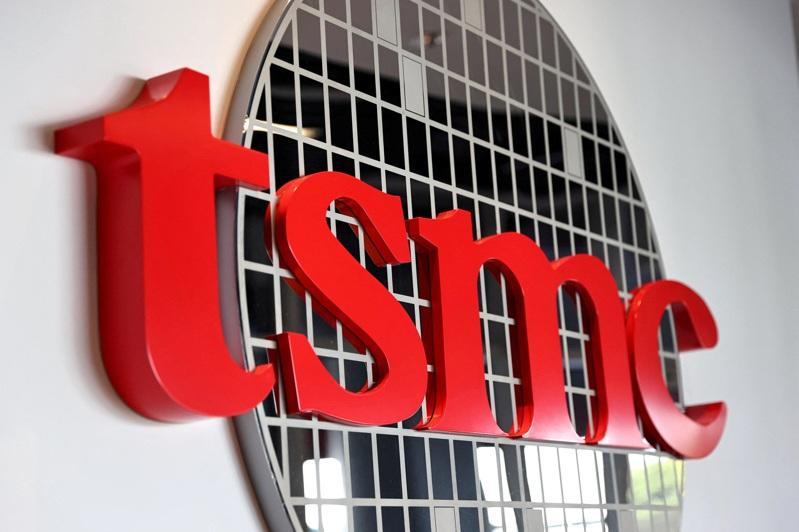

彭博资讯报导，台积电历经近日遭抛售股价表现疲软后，摩根士丹利正在将台积电列为首选股。
大摩分析师Charlie Chan在最新的报告中指出，「在半导体下行周期拉长之时，我们属意台积电的品质以及具有防御性的本质」。他补充说，「确认涨价，加上AI资本支出持续增强，都应该会是关键的催化剂」。 !function(v,t,o){var a=t.createElement("script");a.src="https://ad.vidverto.io/vidverto/js/aries/v1/invocation.js",a.setAttribute("fetchpriority","high");var r=v.top;r.document.head.appendChild(a),v.self!==v.top&&(v.frameElement.style.cssText="width:0px!important;height:0px!important;"),r.aries=r.aries||{},r.aries.v1=r.aries.v1||{commands:};var c=r.aries.v1;c.commands.push((function(){var d=document.getElementById("_vidverto-bc0de73c10937be205a8d57fd75a9690");d.setAttribute("id",(d.getAttribute("id")+(new Date()).getTime()));var t=v.frameElement||d;c.mount("10171",t,{width:720,height:405})}))}(window,document);
Chan认为，借由涨价，台积电2025年可望能够实现大于55%的毛利率，并且在2028年到2030年之间，在其海外晶圆厂的生产达到经济规模后，将毛利率逐渐提升到接近60%的毛利率水准。
台积电ADR目前自7月时的高点已下挫逾20%。大摩说，股价大跌后，台积电ADR「现在再度很有吸引力」。
台积电ADR周一常规交易时收跌1.3%，但周一盘后交易时段，股价回升了0.8%。
大摩给台积电的投资评级是「加码」（overweight）。

摩根士丹利（大摩）将台积电列为首选股。 （路透）
彭博资讯报导，台积电历经近日遭抛售股价表现疲软后，摩根士丹利正在将台积电列为首选股。
大摩分析师Charlie Chan在最新的报告中指出，「在半导体下行周期拉长之时，我们属意台积电的品质以及具有防御性的本质」。他补充说，「确认涨价，加上AI资本支出持续增强，都应该会是关键的催化剂」。
Chan认为，借由涨价，台积电2025年可望能够实现大于55%的毛利率，并且在2028年到2030年之间，在其海外晶圆厂的生产达到经济规模后，将毛利率逐渐提升到接近60%的毛利率水准。
台积电ADR目前自7月时的高点已下挫逾20%。大摩说，股价大跌后，台积电ADR「现在再度很有吸引力」。
台积电ADR周一常规交易时收跌1.3%，但周一盘后交易时段，股价回升了0.8%。
大摩给台积电的投资评级是「加码」（overweight）。